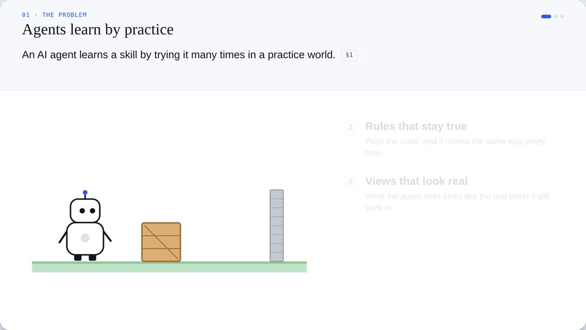
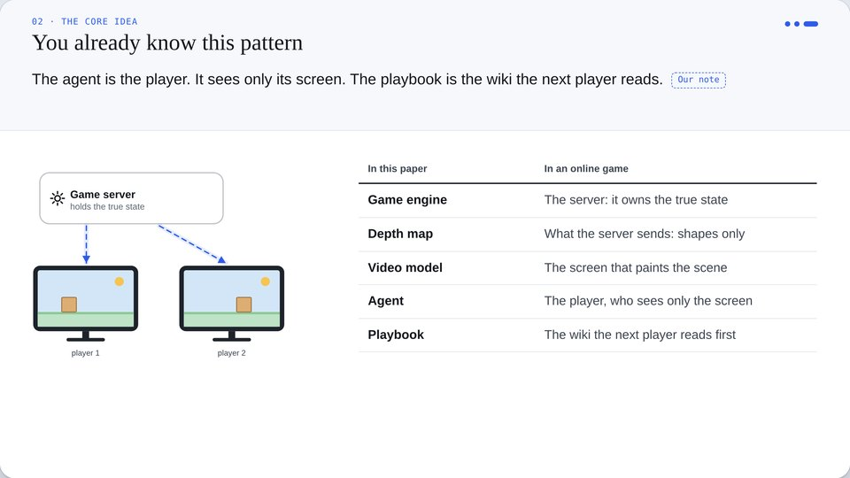

Research papers, explained as films
Each film plays on its own: the problem, the core idea, how it works step by step, and the evidence. You leave knowing how to use it at work. The words are simplified; the paper’s methods and numbers are not.
Now showing · AgentGarten · arXiv 2610.12374
Films
Each film is one page. Open it in any browser, pause anywhere, jump between chapters, or play it at up to 4× speed.

AgentGarten: Code Worlds for Evolving Agents
Keep the world’s rules in code and let a video model only paint what agents see. Covers exact replay for training, and agents that improve each round by writing playbooks.
Attention Is All You Need
The Transformer, with one sentence followed through every step: embeddings, Q, K and V, multi-head attention, the feed-forward layer and the decoder.
The same eight chapters, every time
You always know where you are. Use the chapters to skip to the part you need.
Overview
The paper in one paragraph and up to four numbers to remember.
The problem
Only the problem: what was missing before this paper.
The core idea
The idea as one picture, in plain words, with a takeaway for work.
How it works
The paper’s own architecture, with one example followed through each step.
Evidence
Every test at a glance: what was measured, how, and the real numbers.
Using it
When it fits, when it doesn’t, the settings that matter, what breaks.
The authors’ thinking
Six reasoning moves you can reuse, each with a “Try it”.
Glossary
Every term used in the film, in one place.

Pictures carry the idea
Every beat changes the drawing, and the caption says what changed.

Connected to what you know
Analogies and toy numbers are clearly marked as our own notes.

The real mechanism
Components, names and steps exactly as the paper describes them.
Simple, but never wrong
Simplify the words, never the method
Plain language throughout. Every component, name and number the paper uses stays as it is.
Every claim cites the paper
Each caption shows the section or table it comes from. Anything we added is labelled “Our note”.
One running example
One example goes through the whole mechanism, so you can see how it changes at each step.
Watch a paper in 18 minutes
Or in under 5 at 4× speed. No sign-up and nothing to install.
Play AgentGarten